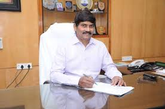

King Vikram Deo Verma, the Maharaja of Jeypore was one of the biggest donors of the university. He donated lands and two million rupees for the establishment of the university which was set to be shifted elsewhere by the education authorities due to lack of funding.[1] Furthermore, he provided ₹1 lakh annually to the university, an approximate figure of ₹17 lakhs between 1930s - 1940s.a[2][3] The liberal king was conferred an Honorary Doctorate degree from the university. The Jeypore College of Technology and Science in Andhra University was founded by Maharajah Vikram Deo.[4] Our commitment to nurturing talent and fostering a culture of achievement has led us to institute the "Andhra University Academic Excellence Awards for Toppers. " This prestigious program is designed to honor the outstanding academic achievements of our students who have consistently demonstrated exceptional King Vikram Deo Verma, the Maharaja of Jeypore was one of the biggest donors of the university. He donated lands and two million rupees for the establishment of the university which was set to be shifted elsewhere by the education authorities due to lack of funding.[1] Furthermore, he provided ₹1 lakh annually to the university, an approximate figure of ₹17 lakhs between 1930s - 1940s.a[2][3] The liberal king was conferred an Honorary Doctorate degree from the university. The Jeypore College of Technology and Science in Andhra University was founded by Maharajah Vikram Deo.[4] Our commitment to nurturing talent and fostering a culture of achievement has led us to institute the "Andhra University Academic Excellence Awards for Toppers. " This prestigious program is designed to honor the outstanding academic achievements of our students who have consistently demonstrated
 |
 |
|---|---|
| Gopal Chandra Memorial Glodmedal | Morung Express News |